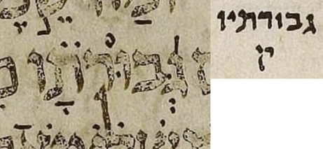

{kind=link}

| גְּ֝בוּרוֹתָ֗יו גְּ֝בוּרֹתָ֗יו |
26:14 | חולם becomes מלא in קרי in μL, says WLC but not BHQ |
The consensus is that חולם stays חסר in the קרי, i.e. the – רתו ending in the כתיב merely expands to – רתיו in the קרי. In contrast to the consensus, in μL, the – רתו ending in the כתיב expands all the way to – רותיב in the קרי. The marginal קרי note in μL is a little hard to parse until you realize that it is “invaded” from above by the descender of a big dotted ק.
In general I do not cover מלא/חסר differences here, but this one seemed worth noting because it involves a כתיב/קרי difference, and it was called out by a WLC note.
BHS does not catch this quirk in μL: it reflects the consensus rather than μL. BHQ half-fixes the error in BHS: it updates its marginal קרי note to reflect μL rather than the consensus, but it does not correspondingly update its bottom-of-page critical apparatus note. This error is similar to BHQ’s error regarding the μL קרי of ידעתה השחר in 38:12.
U — M — μL (page 404A, col 2, line -5 (5 counting from bottom of column)):
μA (Aleppo) (page 276v, col 2, line 9, word 4):

μY (Cambridge 1753) (page 80A, col 1, line 6, word 4):